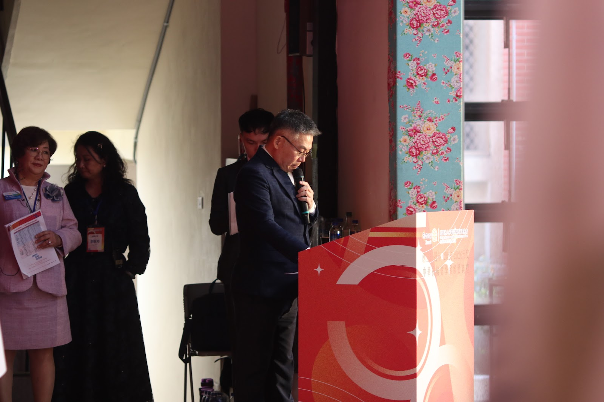

2025.06
交接典禮＆九份畢旅
Rotary Yearbook 2025-2026
把一整年的活動，整理成可以慢慢翻看的月度展覽。
這個版本依照你提供的資料夾，從 2025.06 交接典禮＆九份畢旅 一路排到 2026.06 交接典禮。畫面優先選用大合照、兩位會長相關素材與活動代表照片；若該月目前只有文件，先以活動封面補齊展示版位。
選圖優先順序
大合照
婉華・詠文
活動代表畫面
文件封面補位
Exhibition Cut
14 Chapters. 1 Rotary Year.
用展覽式編排把一整年的活動重新梳理，讓每個月份不只是相簿，而是有節奏、有主題的年度敘事。

2026.01
頒獎典禮

2026.04
淨灘例會
Monthly Archive
一月一活動，完整展開 25-26 年度節奏。
從交接、論壇、迎新，到社會服務與直播主題例會，把一整年的節點做成可以慢慢翻閱的年鑑收藏頁。
手機可左右滑動篩選
Data Reading Rule
資料判讀方式
依你的規則，沒有標年份的活動一律視為 2025 年。目前有些月份資料夾以簽到單、感謝狀或程序表為主，所以網站先放入活動封面與占位視覺；之後只要補進正式照片，我就可以直接替換成更完整的月度故事頁。